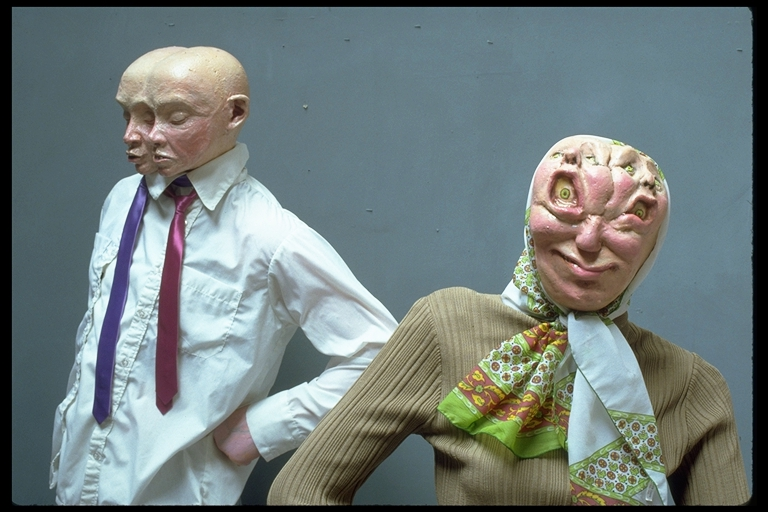

Waitress from Hell
Home
1970s
1980s
1990s
2000s
2010s
2020s
1988
← Return to 1988
Title:
Waitress from Hell
Date:
1988
Medium:
Oil on canvas
Dimensions:
24 × 36 inches
Work ID:
RE-000056
Signature / marks:
None observed.
Notes

Reference sculpture created by Ron English and photographed as a model for
Waitress from Hell
.